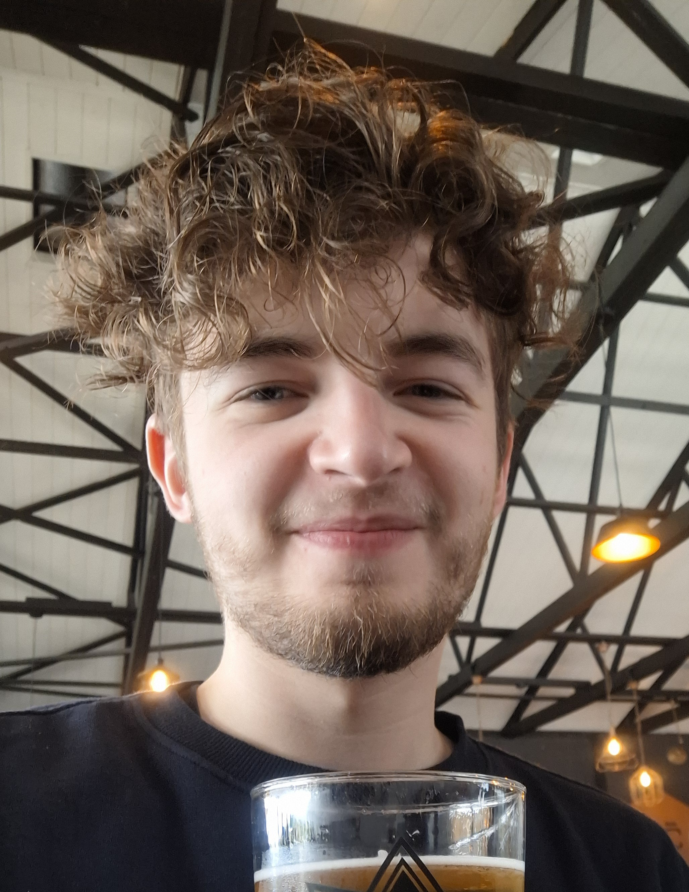

About Me
Hello! I'm Arran Kloppers
Welcome to my portfolio website!
I am a final year BSc Information Technology student at North-West University's Unit of Distance Learning, graduating in 2025.
Ready to join a development team to expand my programming and teamwork skills.
Interested in a career path that combines artificial intelligence (AI), computer science, and information management.
The BSc IT degree has provided me with a strong foundation in computer science, AI and machine learning, and designing and developing computerized systems. Additionally, it focused on information management, including data analysis and knowledge management.
Projects
- Mock Accomodation Booking System: I was responsable for the design of the initial data model and process model.
(Private Repository) https://github.com/Herman26242/CMPG223_Group_2 - Mock concert booking website: I created a C# ASP.NET web application that allows for making bookings and adding and removing artists to the line-up of performers.
Skills
- Java
- Python
- C# (Visual Studio)
- SQL
- Oracle SQL Developer
- Databases
Hobbies
- Building and painting Warhammer 40K miniatures
- Staying up to date with tech news
- Video games, a lot of video games
- Sci-Fi enthusiast
Contact
Email: lkloppers3@gmail.com
Socials
LinkedIn: https://www.linkedin.com/in/arran-kloppers-1b0b3a1b6/
GitHub: https://github.com/ArranKloppers